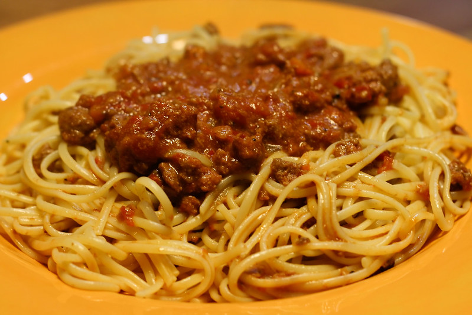

Spaghetti bolognese
Home

Description
Treat yourself to a delicious Italian classic with this homemade Spaghetti Bolognese.
Made with minced meat, ripe tomatoes, fresh herbs and aromatic vegetables, slowly simmered to perfection.
A delicious, hearty Italian classic that's perfect for any occasion!
Ingredients
- 2 tablespoons olive oil
- 1 large onion, minced
- 1 clove garlic, minced
- 1 pound lean ground beef
- ½ pound ground pork
- 1 can Italian plum tomatoes
- ½ pound fresh mushrooms, sliced
- 6 ounces tomato sauce
- 2 carrots, shredded
- 1 stalk celery, chopped
- ½ cup dry white wine
- ½ cup chicken stock
- ½ teaspoon dried basil
- ½ teaspoon dried oregano
- salt and pepper to taste
- 1 pound pasta
Steps
- Warm oil in a large pan over medium heat. Sauté carrots, mushrooms, onion, celery and garlic in hot oil.
- Place the same pan over medium-high heat. Cook and breakup the ground beef and pork until brown and fully cooked. Drain excess grease
- Add the cooked vegetables, tomatoes, tomato sauce, stock, wine, basil, oregano, salt and pepper into the meat mixture. Bring to a boil, cover and reduce the heat. Let the sauce simmer for 1 hour, stirring occasionally
- 10-15 minutes before the sauce is done cooking, put a large pot of water on medium-high heat. Add salt and wait for the water to boil. Add pasta and cook in boiling water until al dente.
- drain the pasta but leave ½ cup of pasta water, add the pasta water to the sauce and stir.